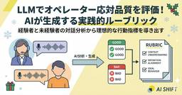

TECH BLOG | 株式会社AI Shift
https://www.ai-shift.co.jp/techblog
AI ShiftのTECH BLOGです。AI技術の情報や活用方法などをご案内いたします。
フィード

オペレーターの「暗黙知」をLLMで言語化する: 「SPUR」を用いた応対品質ルーブリックの自動構築
TECH BLOG | 株式会社AI Shift
こんにちは、AI Shiftの東(@naist_usamarer)です。この記事はAI Shift Advent Calendar 2025の12日目の記事です。 今回の記事では、ユーザー満足度測定のための評価項目（ルー […]投稿 オペレーターの「暗黙知」をLLMで言語化する: 「SPUR」を用いた応対品質ルーブリックの自動構築 は 株式会社AI Shift に最初に表示されました。
2日前
Agent Development Kit の Visual Builderを試して、プロンプトから設計の要点を学ぶ
TECH BLOG | 株式会社AI Shift
こんにちは、AIチームの二宮です。本記事は AI Shift Advent Calendar 2025 11日目の記事です。 今回の記事では、Agent Development Kit（ADK）のVisual Build […]投稿 Agent Development Kit の Visual Builderを試して、プロンプトから設計の要点を学ぶ は 株式会社AI Shift に最初に表示されました。
3日前
音声対話AIの性能をどう測る？Realtime API評価ベンチマークの解説と日本語での検証
TECH BLOG | 株式会社AI Shift
こんにちは、AIチームの大竹です。 この記事はAI Shift Advent Calendar 2025の8日目の記事です。 2024年10月、OpenAIが発表した Realtime API は、音声入出力をリアルタイ […]投稿 音声対話AIの性能をどう測る？Realtime API評価ベンチマークの解説と日本語での検証 は 株式会社AI Shift に最初に表示されました。
6日前

企業向けスライド生成AIエージェントをPythonとGPT5で作ってみた
TECH BLOG | 株式会社AI Shift
こんにちは、AI Shift AI Solution事業部 Forward Deployed Engineer(FDE)の若泉です。この記事はAI Shift Advent Calendar 2025の6日目の記事です。 […]投稿 企業向けスライド生成AIエージェントをPythonとGPT5で作ってみた は 株式会社AI Shift に最初に表示されました。
8日前

Ouroの中間ステップをデコードしてみる
TECH BLOG | 株式会社AI Shift
こんにちはAIチームの戸田ですこの記事はAI Shift Advent Calendar 2025の5日目の記事です。 今回はByteDanceの出した新しいLLMアーキテクチャ、Ouroの中間ステップをデコードしてみた […]投稿 Ouroの中間ステップをデコードしてみる は 株式会社AI Shift に最初に表示されました。
9日前
【社内実践】「AI Crazy Shift」で組織はどう変わったか？ PM業務30%削減の舞台裏とカルチャー変革
TECH BLOG | 株式会社AI Shift
こんにちは、AI Shiftの鉢呂です。 この記事はAI Shift Advent Calendar 2025の3日目の記事です。 弊社は約2年間、生成AIの急速な進化とともに新たな働き方を模索し続けてきました。そして今 […]投稿 【社内実践】「AI Crazy Shift」で組織はどう変わったか？ PM業務30%削減の舞台裏とカルチャー変革 は 株式会社AI Shift に最初に表示されました。
10日前
生成AI推進者が持つべき3つの心構え
TECH BLOG | 株式会社AI Shift
こんにちは、AI Shift AIエージェント事業部 チーフエバンジェリストの及川(@cyber_oikawa)です。 この記事はAI Shift Advent Calendar 2025の2日目の記事です。 AI Sh […]投稿 生成AI推進者が持つべき3つの心構え は 株式会社AI Shift に最初に表示されました。
11日前
Post-hoc Rationalization: LLMの推論は「言い訳」か？
TECH BLOG | 株式会社AI Shift
こんにちはAIチームの戸田です 以前、本TechBlogでDeepSeek-R1などの推論モデルで見られる「aha moment（アハ体験）」について紹介しました※。モデルが思考しているかのように振る舞う様子は非常に興味 […]投稿 Post-hoc Rationalization: LLMの推論は「言い訳」か？ は 株式会社AI Shift に最初に表示されました。
18日前
データ合成から利用まで: Autonomous AI Database だけでどこまでできるかやってみた
TECH BLOG | 株式会社AI Shift
はじめに こんにちは、AIチームの長澤 (@sp_1999N) です。 この記事では Autonomous AI Database (ADB) で提供されている機能を色々触ってみようと思います。 こちらは Oracle […]投稿 データ合成から利用まで: Autonomous AI Database だけでどこまでできるかやってみた は 株式会社AI Shift に最初に表示されました。
25日前
TypeScript版DSPy、axを試してみた
TECH BLOG | 株式会社AI Shift
こんにちはAIチームの戸田です LLMを使ったアプリケーション開発において、Prompt Engineeringは避けては通れません。しかしタスクやドメインによって最適なPromptは異なりますし、ほんの一文追加しただけ […]投稿 TypeScript版DSPy、axを試してみた は 株式会社AI Shift に最初に表示されました。
2ヶ月前